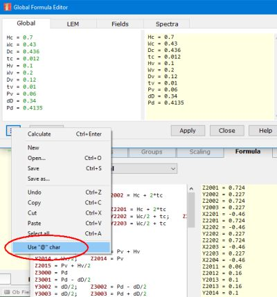

Form - Import ABEC Projects
| Home |
 |
Open this form at menu Tools/Import ABEC Project....
This form is the platform for starting an import-procedure of an existing ABEC-project.
ABEC is the predecessor of AKABAK. The ABEC-application has an input system based on scripts, where the project-file and all associated files are assumed to be located within a folder.
Operation
Open ABEC Project
Select the project-file of an ABEC-project, for example "Project.abec".
Start Import
This is the first step of the import: Interpretation. All files and sub-files, also all data- and mesh-files are loaded, checked and linked.
Open File-Manager
Click the button or dbl-click on the label to open the File-Manager at the folder of the ABEC-project.
Apply
This is the second step. The current AKABAK-project is cleared. Then the ABEC-data are transformed to an AKABAK-project and rendered.
Compatibility
Most projects should come out as before and should also render the same results. Here and there, there might be hick-ups:
Multiple Observation Scripts
At import multiple scripts are compiled to one single script. This may have implications on specifications of ABECs sections such as Driving_Values, Control_Field, Control_Spectra. These will be imported and applied. However only the first occurrence, all further sections will be ignored.
Lumped Element Scripts
These are imported as is. This means the script is not converted to a schematic. The lumped element script will be hosted and processed by a special component which is called LE-Script.
Driving_Values
Parameters of this section are copied to values of menu Global/Level of Driving and menu Global/Fixed Driving.
Control_Field, Control_Spectra
These sections are ignored during import to AKABAK.
In ABEC Control_Spectra provides the link-mechanism to VACS. In AKABAK the link to curves of VACS is handled automatically.
Driving
In ABEC this sections of the BEM-part takes reference to another section of boundaries or pressure sources. It provides parameters of vibration or strength of the source. In AKABAK these parameters become part of a component of boundaries or pressure source. Hence, the assignment to individual element-items is not possible anymore. For example
Elements D1
RefNodes=N
101 1001 1002 1003 1004 // Top
102 1001 2001 2002 1002 // Side
104 1004 1003 2003 2004 // Side
105 1001 1004 2004 2001 // Driving
...
Driving D1
RefElements=D1
DrvGroup=1001
101 105 Weight=1.0
needs to be modified to
Elements D0
RefNodes=N
105 1001 1004 2004 2001 // Driving
Elements D1
RefNodes=N
101 1001 1002 1003 1004 // Top
102 1001 2001 2002 1002 // Side
104 1004 1003 2003 2004 // Side
...
Driving D0
RefElements=D0
DrvGroup=1001
DrvWeight=1.0
WallImpedance
In ABEC this section take reference to another section of boundaries. WallImpedance specifies the radiation properties of boundaries. In AKABAK each occurence of WallImpedance becomes a component of the list General where it can be edited with the help of form Wall Impedance. In AKABAK the components can take reference to Wall Impedance. In ABEC the reference is the other way round where one also can reference an individual item of a component. This is not possible anymore in AKABAK. For example:
Elements D2
RefNodes=N
101 1002 1006 1007 1005 // Top
102 1002 2002 2006 1006 // Side
104 1005 1007 2007 2005 // Side
105 1006 2006 2007 1007 // End
...
WallImpedance D2
ImpType=Damping
Value=0.5
RefElements=D2
101 105
needs to be modified to
Elements D2
RefNodes=N
101 1002 1006 1007 1005 // Top
102 1002 2002 2006 1006 // Side
104 1005 1007 2007 2005 // Side
Elements D2-Damped
RefNodes=N
105 1006 2006 2007 1007 // End
...
WallImpedance D2
ImpType=Damping
Value=0.5
RefElements=D2-Damped
Inheritance
Some components support inheritance. In AKABAK one can reference only the original component to inherit its parameters. This is different from ABEC which supports multiple inheritance.
Formula
Formula are used to parameterise values.
Please, take care of units. ABEC assumes SI-units, whereas AKABAKs unit-system can be chosen at menu Options/Units. Normally the conversion works automatically. However, this would not be possible within the formula-system.
In ABEC there is a section called "Formula" for global specification. And there are individual formula for each parameter. The content of section "Formula" is copied to AKABAKs global formula which can be edited at menu Global/Formula. Parameter-formula are collected and copied to the formula-page of the component.
For example
| results in  |
Formula
// Cabinet
Hc = 0.7 // Cabinet height 0.7
Wc = 0.43 // Cabinet width 0.43
Dc = 0.436 // Cabinet depth 0.436
tc = 0.012 // Cabinet wall thickness 0.012
// Vent
Hv = 0.1 // Vent height
Wv = 0.2 // Vent width
Dv = 0.12 // Vent length
tv = 0.01 // Vent wall thickness
Pv = 0.06 // Vent position bottom
// Diaphragm
dD = 0.34 // Diaphragm outer diameter
Pd = 0.4135 // Diaph position center 0.4135
Nodes "NF"
// Front wall
2001 0.0 0.0 {Hc + 2*tc}
2002 0.0 {Wc/2 + tc} {Hc + 2*tc}
2003 0.0 {Wc/2 + tc} 0.0
2004 0.0 0.0 0.0
// Rear wall
2201 {-Dc - 2*tc} 0.0 {Hc + 2*tc}
2202 {-Dc - 2*tc} {Wc/2 + tc} {Hc + 2*tc}
2203 {-Dc - 2*tc} {Wc/2 + tc} 0.0
2204 {-Dc - 2*tc} 0.0 0.0
...
At the top we see the editor with the global formula system. In the background we see page Formula of component Nodes. In ABEC formula of coordinates are wrapped in curley brackets. In AKABAK these end up on page Formula as, for example: "Z2001 = Hc + 2*tc". It means that the z-component of Node with number 2001 gets assigned the result of formula "Hc + 2*tc".
As explained at menu Global/Formula we normaly use a leading @-character in order to adress a global variable. However, in ABEC this technique is not supported. In order that advanced formula-system can be imported to AKABAK we can disable the usages of the @-character.